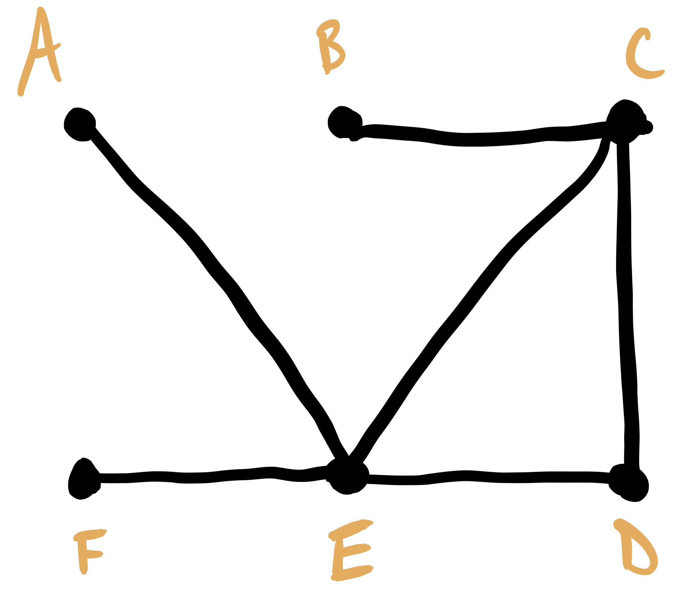
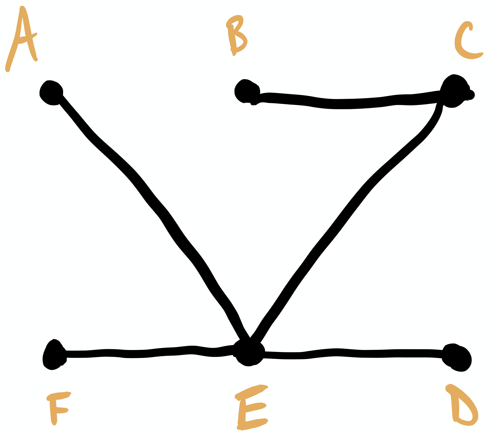
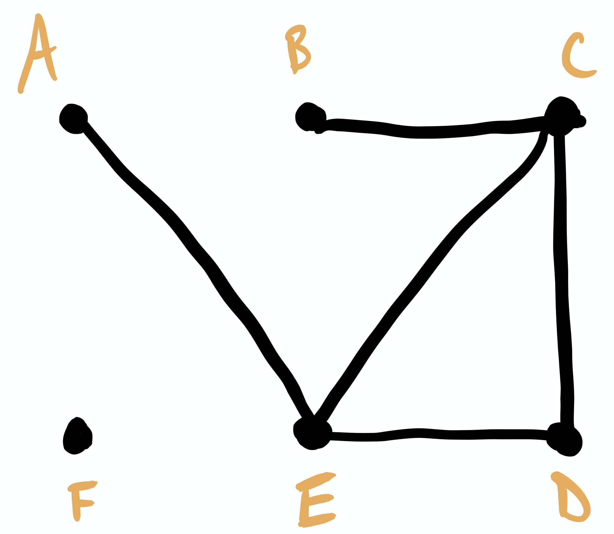

Section 5.4 Intro to Trees
Two fundamental questions in the analysis of graphs are: given two vertices, is there a path between them? And if so, how can we find the shortest possible path? Let's consider the second question first.
Notice in the graph in Figure 5.1.11 that there are several paths between, say, \(a\) and \(f\text{.}\) There is a path spanning two edges: \(a \to c \to f\text{.}\) There is also a path spanning four edges: \(a\to c \to d \to e \to f\text{.}\) In general, by the distance between two vertices, we mean a path consisting of the fewest edges possible, so the distance between \(a\) and \(f\) is 1.
Activity 5.4.1.
Consider the graph in Figure 5.4.2.
Find three paths from vertex \(L\) to vertex \(E\text{.}\)
Determine the distance from vertex \(B\) to vertex \(N\text{.}\) How many paths of this distance can you find?
Returning to the first question above, if the graph is connected, the answer is obviously yes. So, given a graph \(G(V,E)\text{,}\) we are often interested in removing superfluous edges in a systematic way to arrive at a smallest (which will be made precise shortly) connected subgraph \(T(V,E')\text{.}\)
Definition 5.4.3.
A cycle on \(n\) vertices \(v_1, v_2, \ldots, v_n\) is the graph with \(n+1\) edges \(v_1 v_2, v_2 v_3, \ldots, v_{n-1} v_n, v_n v_1\text{.}\) We denote such a cycle by \(C_n\text{.}\) That is, a cycle consists of a path \(v_1 \to v_2 \to v_3 \to \ldots \to v_n \to v_1\text{,}\) where the only repeated vertex is the first/last one.
Example 5.4.4.
One of the major questions in theoretical graph theory is: given a graph \(G\text{,}\) is there an algorithm that determines whether \(G\) contains any cycles? There are several such algorithms, and they are relatively efficient. A related question is: given a graph \(G\text{,}\) is there an efficient algorithm which can produce a cycle that visits each vertex exactly once? The answer to this question is currently unknown (as of April 2020), but an active area of research.
Our focus for the rest of this section is graphs that do not contain any cycles.
Definition 5.4.5.
A connected graph \(T(V,E)\) that does not contain any cycles is known as a tree.
Example 5.4.6.
The description given in Definition 5.4.5 is pretty close to what we want. Given a graph \(G(V,E)\text{,}\) we want a tree \(T(V,E')\) such that every vertex of \(G\) is also a vertex of \(T\text{,}\) and every edge of \(T\) to be an edge of \(G\text{.}\) Such a tree is known as a spanning tree for \(G\text{.}\)
Exploration 5.4.7.
Determine whether the given graph is a tree. Justify your answer by making explicit reference to Definition 5.4.5.
- 
Figure 5.4.8. The graph for Question 1. Is it a tree, or no? - 
Figure 5.4.9. The graph for Question 2. Is it a tree, or no? - 
Figure 5.4.10. The graph for Question 3. Is it a tree, or no?
The last big idea that we'll explore is the notion of a \(weighted\) graph, which we introduce with an example.
Example 5.4.11.
Consider the graph in Figure 5.4.12. Suppose the vertices represent stations in a factory, and the edges represent conveyor belts between the stations.
A manager in the factory may be interested in how efficiently the conveyor belts can be run. Suppose that belt \(cd\) costs $11/day to run, belt \(de\) costs $8/day to run, belt \(cf\) costs $9/day to run, belt \(df\) costs $12/day to run, and belt \(ef\) costs $11/day to run. We can represent this by labeling each edge with its cost, as seen in Figure 5.4.13.
This is an example of a weighted graph, which is just a graph with the edges labeled. The labels usually represent something meaningful about the situation the graph represents. For example, we could have weighted the edges in Figure 5.4.13 with the time it takes to move an object from one station to another, or the distance between stations (as one might find on a map), etc.
We tie this all together with the concept of a minimal spanning tree, which is a spanning tree with the smallest total weight.
Example 5.4.14.
Again, consider the weighted graph representing our conveyor belt in Figure 5.4.13. The total cost to run the belts for one day is $51. Assume that eliminating a belt does not substantially increase the cost of running the others. How could we find a lower-cost arrangement?
There are several algorithms for finding minimum weight spanning trees in addition to the one presented in Example 5.4.14. A famous such example is Prim's algorithm.